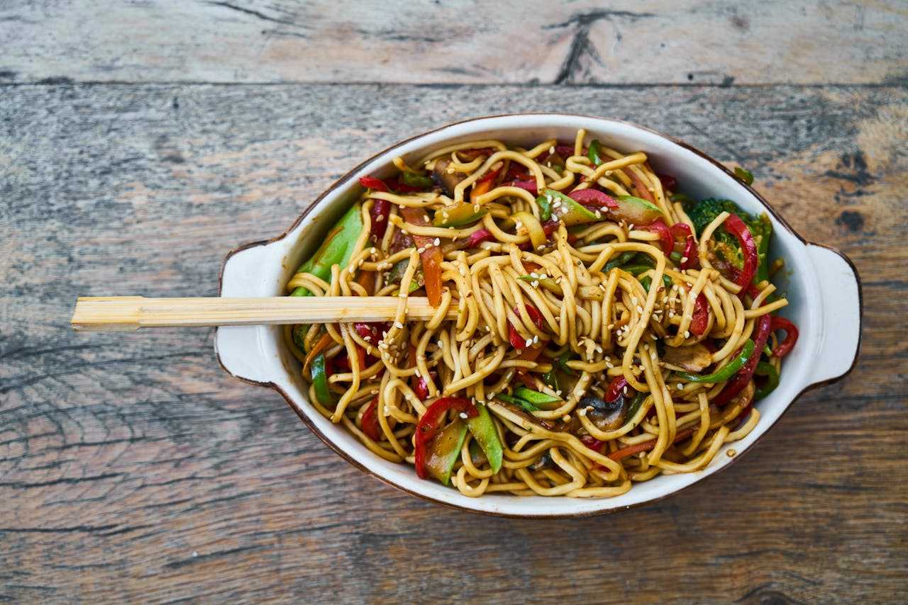

Protein
Proteins are made up of building blocks called amino acids. There are about 20 different amino acids that link together in different combinations.

Five Examples of Protein Foods
- Egg
- Beef
- Nuts
- Dairy
- Lentils
Carbohydrates, or carbs, are sugar molecules. Along with proteins and fats, carbohydrates are one of three main nutrients found in foods and drinks.
Proteins are made up of building blocks called amino acids. There are about 20 different amino acids that link together in different combinations.
Vitamins are a group of substances that are needed for normal cell function, growth, and development. There are 13 essential vitamins.